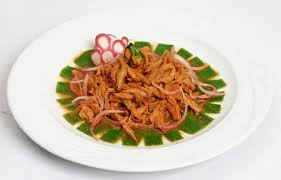
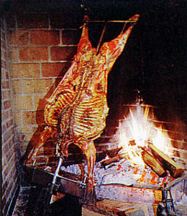
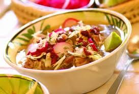
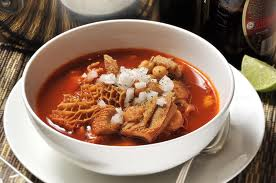
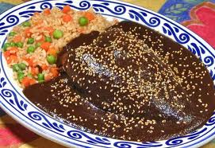

Ingredientes
Porciones: 6
1 cucharada de aceite vegetal
1 1/2 kilos de cabeza de lomo de puerco en cubos de 2 centímetros
3 tazas de jugo fresco de naranja dulce
100 gramos de chiles guajillos de los que no pican, desvenados y remojados
1 taza de vinagre
1 cabeza de ajos, pelados
1/2 barra (50 gramos) de achiote
Sal, al gusto
Salsa
1 cebolla morada, rebanada
10 chiles habaneros (o al gusto), rebanados
20 limones agrios, su jugo
Sal, al gusto

INGREDIENTES
(Para 6 personas)
1 cabrito entre 18 y 21 días de nacido partido en trozos. Se pide el espinazo aparte, cortado en pedazos chicos
250 gramos de manteca de puerco
El jugo de 6 naranjas
Sal de ajo
Para la salsa martajada:
1 cucharada de manteca de puerco
1 cebolla finamente picada
6 chiles serranos picados
4 jitomates despepitados y picados
½ taza de cerveza
1 manojito de cilantro picado toscamente
Sal al gusto

Ingredientes
Porciones: 8
1 kilo de maíz para pozole, pre-cocido
1 cabeza de ajo
Sal al gusto
1 kilo de carne de puerco, en trozos medianos
1 jitomate grande
100 gramos de chile mirasol
1 pizca de orégano
1 cucharadita de cominos
1 diente de ajo

Ingredientes
Porciones: 8
9 litros de agua, divididos
1 1/4 kilo de menudo de res
6 dientes de ajo, picados finamente
1 cebolla grande, picada finamente
1 1/2 cucharadas de sal
2 cucharada de pimienta negra molida
1 1/2 cucharada de orégano seco
2 cucharadas de chile en polvo
5 chiles de árbol
6 chiles japoneses, sin semillas
1 kilo de maíz pozolero precocido
1/2 cebolla, picada
1/4 taza cilantro fresco, picado
2 limones grandes, en trozos center>

Ingredientes
Porciones: 6
1 kilo de espinazo de res, o carne para cocido de res
1 chamorro de cerdo, en trozos
½ cebolla
1 diente de ajo
2 ramas de epazote
2 cucharadas de consomé de pollo en polvo
1 jitomate grande
1 chile ancho, sin venas ni semillas
1 chile pasilla, sin venas ni semillas
1 clavo
3 pimientas
1 rama chica de canela
1 pizca de orégano
1 pizca de comino
1 ½ cucharadas de harina o fécula de maíz
6 calabacitas chicas, en cubos
2 elotes, en 3 rebanadas cada uno
Sal, al gusto
Cebolla picada
Limones